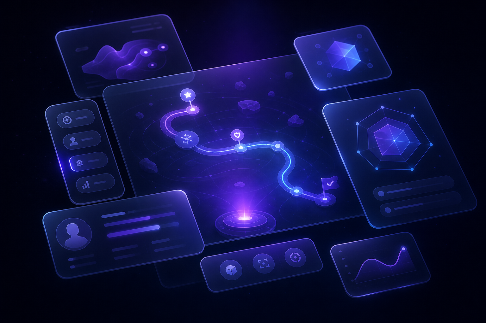
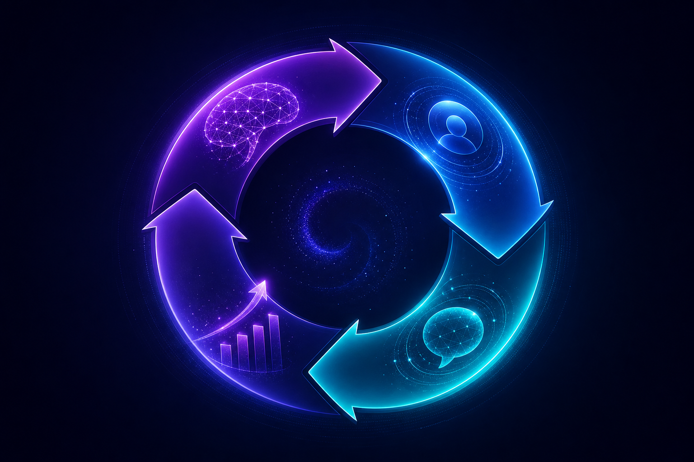
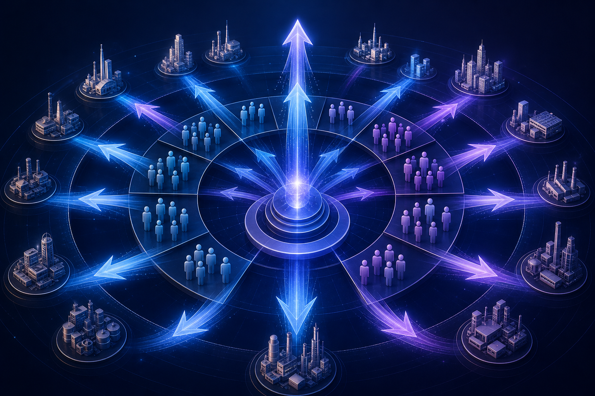

封面页：PlayableOS
企业培训，为什么越来越难？
AI 正在重新定义能力成长
企业培训，为什么越来越难？
AI 正在重新定义能力成长
企业真正的问题，从来不是没有知识。 而是知识无法持续转化为组织能力。
过去二十年，企业培训产业快速发展。企业不断投入预算建设：
越来越多的企业开始意识到：**人才，是企业最重要的竞争力。**因此，企业愿意持续投入资源培养员工。然而，投入越来越大，效果却并没有同步提升。
过去几年，我们长期服务企业家，也持续观察不同企业的人才培养方式。我们发现，无论企业规模大小，几乎都会遇到相似的问题。企业拥有大量培训资料。却很少有人真正使用。课程越来越多。员工学习意愿却越来越低。培训越来越频繁。真正发生行为改变的人却越来越少。很多培训结束以后，员工重新回到工作岗位，一切又回到了原来的状态。知识完成了交付。成长却没有发生。
很多企业已经拥有非常丰富的知识资产。例如：
这些知识本身并没有问题。真正的问题在于：它们停留在知识。没有持续进入员工每天的工作行为。
今天，大多数企业培训仍然遵循相同的逻辑。
准备课程
↓
组织学习
↓
完成考试
↓
培训结束
这个流程解决的是：**知识有没有学。**而不是：**能力有没有形成。**真正的能力，需要不断实践。不断反馈。不断修正。不断重复。能力不是"听会"的。而是"练会"的。
学习，可以发生在一天。成长，往往发生在几个月，甚至几年。员工可能已经学过很多课程。却依然不知道：第一次拜访客户应该怎么沟通。第一次面对投诉应该如何回应。第一次成为管理者应该如何带团队。真正困难的，从来不是知道答案。而是在真实场景中，能够做出正确的行为。
过去十年，大量企业投入建设数字学习平台。这些平台不断升级：课程越来越丰富。搜索越来越方便。视频越来越高清。考试越来越完善。但是，大多数平台仍然围绕一个中心：**内容。**员工需要：搜索内容。观看内容。学习内容。完成内容。平台关注的是：课程数量。学习时长。考试成绩。而不是：员工能力是否真正发生改变。
很多人认为：AI 能帮助企业生成课程。帮助企业制作 PPT。帮助企业整理知识。这些当然重要。但我们认为：这并不是 AI 最大的价值。AI 第一次让企业拥有了持续陪伴员工成长的能力。它不仅能够回答问题。更能够：持续训练。持续反馈。持续调整。持续成长。培训开始从"一次性交付"走向"持续能力建设"。
过去：企业管理知识。未来：企业管理能力。过去：员工完成课程。未来：员工完成成长。过去：企业统计学习数据。未来：企业持续建设组织能力。企业真正需要的，将不再是一套学习平台。而是一套能够持续帮助组织成长的能力平台。
每一家企业，都拥有大量知识。 但真正决定企业竞争力的，从来不是知识，而是能力。
今天的企业，从来不缺知识。企业拥有越来越丰富的培训课件、标准流程、制度规范、案例沉淀、产品文档和管理经验。过去二十年，企业不断建设知识体系：
企业相信，只要拥有更多知识，组织就会持续成长。然而，一个更加真实的现实正在发生。知识越来越多。 能力却没有同步增长。
过去很多年，我们一直服务企业家。我们的起点不是 AI，而是企业教育。在长期陪伴企业成长的过程中，我们发现了一个反复出现的问题。企业投入了大量资源进行培训。课程越来越丰富。平台越来越完善。学习数据越来越漂亮。但是，当企业真正面对市场竞争时，管理者最关心的问题依然没有改变。他们不会问：
企业今年上线了多少门课程？
他们也不会问：
员工学习了多少小时？
他们真正关心的是：
这些问题，传统培训很难回答。
长期以来，大多数企业培训都围绕"知识传递"展开。讲师讲。员工听。课程结束。培训结束。知识完成了交付。但成长，并没有因此发生。原因并不是课程不好。而是：**知识的传递，并不等于能力的形成。**员工真正成长，需要不断经历：理解。实践。反馈。修正。再次实践。这是一个持续循环，而不是一次性的学习过程。
AI 的价值，并不仅仅是生成内容。真正重要的是：AI 可以持续陪伴每一个员工成长。它能够：
过去，一个讲师只能面对几十个人。未来，一个 AI 可以持续陪伴整个组织。企业第一次拥有了真正实现规模化能力成长的可能。
过去，企业管理知识。未来，企业管理能力。过去：
知识
↓
学习
↓
结束
未来：
知识
↓
体验
↓
行为改变
↓
能力成长
↓
组织竞争力
这不仅意味着培训方式发生变化。更意味着企业建设组织能力的方法，正在发生改变。
PlayableOS 并不是为了重新做一个学习平台。也不是为了重新做一个游戏平台。我们希望建设的是一套全新的企业能力成长平台。企业上传知识。AI 自动理解知识。AI 自动生成可体验、可互动、可训练的成长内容。员工在真实体验中持续成长。企业最终获得的，不是更高的课程完成率。而是持续提升的组织能力。
未来，每一家企业都会拥有自己的 AI。未来，每一份知识都会拥有自己的数字生命。未来，每一位员工都会拥有属于自己的成长路径。企业真正的竞争力，不再来自拥有多少知识。而来自：**能否持续把知识转化为组织能力。**这，就是 PlayableOS 希望解决的问题。
接下来，我们将回答以下问题：
Make Every Knowledge Playable.
让每一份知识，都能够转化为真正的能力。
每一次技术革命，都会重新定义企业培养人才的方式。 AI 也不会例外。
过去，人们习惯把 AI 理解为一种工具。帮助写文章。帮助做 PPT。帮助写代码。帮助提高效率。这些当然重要。但如果仅仅把 AI 当作效率工具，它带来的价值将十分有限。真正值得关注的问题是：AI 将如何重新定义企业培养人才的方式？
过去，企业培训主要依赖三种方式：
这些方式都有价值。但都有一个共同限制：**高度依赖人的时间。**优秀讲师无法同时陪伴成千上万名员工。优秀管理者也无法每天持续指导每一个新人。企业能力建设始终受到人力资源的限制。AI 第一次打破了这个限制。它可以持续工作。持续反馈。持续陪伴。每一位员工，都可以拥有属于自己的 AI 教练。
传统培训强调标准化。所有员工学习同样内容。参加同样课程。完成同样考试。这种方式适合传播知识。却很难适应每个人不同的成长速度。AI 的出现，让成长第一次可以真正个性化。同一个岗位。不同员工。可以拥有不同训练路径。不同挑战。不同反馈。真正做到：千人千面，因人成长。
课程只能提供答案。能力来自不断训练。AI 可以把知识转化为：
员工不再只是阅读知识。而是在不断实践中形成能力。学习开始变成体验。知识开始变成行为。行为开始形成能力。
很多人认为：AI 会取代讲师。我们并不这样认为。未来真正发生变化的，不是讲师消失。而是讲师的角色发生改变。过去：讲师负责传递知识。未来：讲师负责设计成长。AI 负责持续训练。人负责启发。AI 负责陪伴。二者共同构建新的能力成长体系。
过去：
课程
↓
学习
↓
考试
未来：
知识
↓
AI体验
↓
行为
↓
反馈
↓
能力成长
企业关注的重点，也将从课程完成率，转向能力成长速度。
我们认为，AI 最大的价值，不是替代员工。也不是减少员工。而是帮助企业：**让每一位员工成长得更快。**这是企业长期竞争力真正的来源。
AI 已经能够理解知识。生成内容。模拟场景。进行对话。实时反馈。这些能力第一次可以被组合成一个完整的能力成长系统。PlayableOS 正是在这样的时代背景下诞生。它不是重新发明培训。而是重新定义：知识如何持续成长为组织能力。

如果重新设计一家企业的能力成长系统，它应该长什么样？
很多人第一次了解 PlayableOS 时，都会问：你们是不是一家 AI 教育公司？或者：你们是不是一家企业培训平台？或者：你们是不是新一代 LMS？答案都是：**不是。**因为我们解决的问题，与传统学习平台完全不同。传统平台解决的是：**如何更高效地传递知识。**PlayableOS 解决的是：**如何持续把知识转化为组织能力。**这是两个完全不同的问题。
过去二十年，LMS（Learning Management System）解决了企业培训数字化的问题。企业可以：
它极大提升了知识管理效率。但它的核心对象始终是：**课程（Course）。**PlayableOS 的核心对象不是课程。而是：**Playable。**课程负责传递知识。Playable 负责形成能力。
今天已经有很多 AI 可以帮助企业：生成 PPT。生成视频。生成试题。生成课程。这些工具帮助企业降低了内容生产成本。PlayableOS 并不止于内容生成。我们的目标不是：帮助企业拥有更多内容。而是帮助企业拥有更多能力。因此，AI 在 PlayableOS 中承担的角色不是创作者。而是：能力成长设计者。
PlayableOS 借鉴了游戏设计的方法。但我们不是为了娱乐。游戏真正值得学习的地方，不是画面。不是积分。不是排行榜。而是：它能够持续激发人的参与和成长。我们希望把游戏中关于成长、反馈、挑战和沉浸体验的设计方法，引入企业能力建设。因此：我们游戏化成长，而不是游戏化学习。
PlayableOS 是一套 AI 驱动的企业能力成长平台。它帮助企业建立一个完整的能力成长闭环。
企业知识
↓
AI 理解知识
↓
生成 Playable
↓
员工体验
↓
行为改变
↓
能力成长
↓
组织能力提升
整个系统围绕"能力成长"持续运行。
Playable 是 PlayableOS 中最核心的产品单位。它不是课程。也不是考试。而是：**一个可以持续体验、持续反馈、持续成长的能力训练单元。**例如：销售新人第一次接待客户。客服第一次处理投诉。管理者第一次绩效沟通。这些真实工作场景，都可以变成一个 Playable。员工不是阅读案例。而是进入案例。不是学习答案。而是做出选择。不是完成考试。而是完成成长。
企业最终获得的，并不是：更多课程。更多视频。更多考试。企业真正获得的是：
知识开始真正流动。经验开始真正沉淀。能力开始真正积累。
我们相信，未来企业能力平台将不再围绕"课程"设计。而将围绕"成长"设计。课程，只是知识的载体。Playable，才是能力形成的载体。未来，每一家企业都会拥有属于自己的 Playable Library。每一位员工都会拥有属于自己的 Capability Journey。企业每天都在成长。组织每天都在进化。
**PlayableOS 是一套帮助企业持续将知识转化为组织能力的 AI 驱动能力成长平台。**它不是学习平台。不是课程平台。不是考试平台。而是一套持续运行的企业能力操作系统。
我们不是创造了一项新的 AI 能力。 我们重新定义了企业知识如何转化为组织能力。
过去两年，大量 AI 产品开始进入企业。AI 可以：
企业内容生产效率得到巨大提升。但是，我们发现：**内容越来越多，并不意味着能力越来越强。**知识仍然停留在知识。AI 仍然停留在工具。企业仍然需要思考：如何真正帮助员工成长。
传统企业认为：
知识 = 内容
因此：知识需要保存。需要搜索。需要学习。PlayableOS 认为：
知识 = 能力的原材料
知识真正的价值，不在于存储。而在于：**不断产生新的能力。**因此，每一份企业知识，都应该能够持续参与员工成长。
过去：企业交付课程。今天：企业交付内容。未来：企业应该交付成长。因此，我们把培训对象，从课程变成了 Playable。每一个 Playable 都对应一个真实能力目标。例如：
员工不是学习知识。而是在完成真实任务的过程中成长。
今天，大多数 AI 产品更像：**内容助手。**帮助企业：写。生成。总结。搜索。而 PlayableOS 中的 AI，更像：**成长教练。**它不仅回答问题。更重要的是：持续观察。持续训练。持续反馈。持续调整。AI 不只是生成答案。AI 更帮助员工形成能力。
过去：企业能力建设依赖优秀讲师。依赖优秀管理者。依赖长期经验积累。这种模式很难规模化。PlayableOS 希望把企业优秀经验沉淀下来。让 AI 持续参与组织能力建设。优秀员工的经验。可以不断复制。优秀管理者的方法。可以持续传播。企业知识开始真正成为组织资产。
过去：
知识
↓
课程
↓
学习
↓
结束
PlayableOS：
知识
↓
Playable
↓
员工体验
↓
行为数据
↓
能力成长
↓
持续优化
↓
新的 Playable
知识第一次拥有了持续演化的能力。每一次员工体验。都会反过来帮助企业不断优化知识。企业知识开始形成真正的成长闭环。
把企业知识自动转化为可体验、可训练的成长内容。
把学习结果升级为能力成长结果。企业关注的不再是学习完成率。而是能力提升。
把一次性培训升级为持续成长。成长不是一次课程。而是一条持续进化的 Journey。
把内容平台升级为能力平台。企业管理的不再是课程。而是整个组织的能力体系。
未来，每一家企业都会拥有自己的 AI。但真正的差异，不在于谁拥有 AI。而在于：**谁能够持续把企业知识转化为组织能力。**这正是 PlayableOS 希望建立的新能力。

企业知识如何一步一步转化为组织能力？
这一章，我们不讨论 AI 技术。只讨论产品。
PlayableOS 围绕一个简单而完整的闭环运行。
企业知识
↓
AI生成 Playable
↓
员工体验
↓
行为数据
↓
能力评估
↓
持续成长
整个产品，不断重复这个循环。企业上传的每一份知识，都能够持续产生新的能力。
企业无需重新开发课程。只需要上传已有内容，例如：
PlayableOS 不改变企业已有知识体系。而是在已有基础上完成能力转化。
AI 自动分析企业知识。生成对应的能力训练。例如：销售培训资料。生成销售对话训练。客户投诉案例。生成投诉处理模拟。安全操作规范。生成流程演练。管理制度。生成管理决策挑战。企业无需重新设计课程。即可快速获得可体验的训练内容。
员工收到训练任务后，不再观看课程。而是直接进入真实场景。例如：第一次接待客户。第一次绩效沟通。第一次处理投诉。第一次跨部门协作。AI 根据员工选择持续推进剧情。整个过程更接近真实工作，而不是课堂学习。
训练过程中。AI 持续观察员工行为。包括：
训练结束后。AI 自动生成成长反馈。告诉员工：哪些地方做得很好。哪些地方可以继续提升。
每一次体验。都会形成新的能力数据。企业能够持续看到：员工能力变化。团队能力变化。组织能力变化。企业终于能够回答一个过去很难回答的问题：
我们的员工，真的成长了吗？
PlayableOS 服务四类用户。
关注：组织能力。团队成长。经营数据。
关注：知识管理。训练运营。成长效果。
关注：岗位能力。团队表现。人才培养。
关注：成长。挑战。反馈。持续进步。
统一管理企业知识资产。支持持续更新。持续沉淀。
AI 自动生成训练。统一管理所有 Playable。支持快速发布。持续优化。
记录员工成长轨迹。形成能力画像。生成成长建议。
帮助管理者了解：
某制造企业新入职了一名设备工程师。过去。他需要：阅读手册。观看课程。跟着师傅学习。现在。企业上传设备操作规范。AI 自动生成多个 Playable。第一天。他完成设备巡检训练。第二天。完成故障排查训练。第三天。完成安全应急训练。每一次训练结束。AI 自动反馈。主管实时查看成长情况。员工每天都在真实体验中成长。企业每天都在积累组织能力。
企业知识
↓
AI生成 Playable
↓
员工训练
↓
AI反馈
↓
能力成长
↓
组织能力提升
这就是 PlayableOS 的完整产品闭环。
AI 的价值，不是替代培训。 而是持续帮助每一位员工成长。
今天，大多数企业接触 AI 的方式都是聊天。员工提出问题。AI 给出答案。这种方式能够帮助员工获取知识。但很难帮助员工形成能力。因为真正的能力，不是知道答案。而是在真实场景中，能够做出正确的判断和行动。因此，我们希望 AI 扮演一个新的角色：成长引擎（Growth Engine）。
整个系统中，AI 持续完成五项工作。
理解知识
↓
设计训练
↓
陪伴体验
↓
持续反馈
↓
帮助成长
这五个步骤共同构成企业能力成长闭环。
企业无需重新制作课程。上传已有资料即可。例如：
AI 自动理解知识内容。识别重点。整理结构。建立知识之间的关联。企业知识第一次真正成为可以持续使用的数字资产。
理解知识以后。AI 自动生成对应训练。不同类型的知识。生成不同体验。例如：销售知识。生成销售对话。管理知识。生成管理情景。安全规范。生成操作演练。企业无需重新设计课程。即可快速形成训练内容。
训练开始以后。AI 不只是观察。而是持续参与。它会根据员工不同选择。不断调整：
每一次训练。都更接近真实工作。而不是标准答案。
成长最大的价值。来自反馈。AI 持续分析员工行为。帮助员工理解：哪些判断正确。哪些地方需要改进。为什么会产生这样的结果。员工获得的不只是分数。更重要的是：成长建议。
每一次训练。都会产生新的数据。这些数据帮助企业持续优化：知识。训练。成长路径。随着越来越多员工参与。企业知识不断丰富。训练不断完善。组织能力持续提升。整个系统形成持续进化。
我们认为。AI 最大的价值。不是自动生成内容。而是持续推动能力形成。它帮助企业完成一件过去很难做到的事情：让每一位员工，都拥有一位持续陪伴自己的成长教练。
企业真正需要的 AI。不仅需要理解语言。更需要理解：岗位。流程。业务。组织。成长。因此。PlayableOS 的 AI 并不是一个通用助手。而是围绕企业能力成长设计的 AI 系统。它服务的不只是一个问题。而是一整个成长过程。
未来，每一家企业都会拥有 AI。真正的差异，不是谁拥有 AI。而是谁能够利用 AI，持续建设组织能力。PlayableOS 希望成为企业能力成长的新基础设施。
我们相信，一个新的市场正在形成。 它不是传统企业培训市场。 而是 AI 驱动的企业能力成长市场。
无论企业规模大小。最终都会面对三个问题：第一，新员工如何更快成长？第二，优秀经验如何不断复制？第三，组织能力如何持续提升？过去，这些问题主要依靠：
未来，这些问题将越来越依赖 AI。
过去二十年。企业竞争主要来自：产品。渠道。成本。未来十年。越来越多行业开始进入同质化竞争。真正拉开差距的，将越来越是：组织能力。谁能够更快培养人才。谁能够更快复制经验。谁能够更快适应变化。谁就拥有更强的竞争优势。因此，能力建设将从企业内部事务，逐渐成为企业核心战略。
过去，企业软件主要帮助企业管理：
AI 出现以后。企业软件开始进入新的阶段。它不仅帮助企业管理。更帮助企业思考。帮助企业学习。帮助企业成长。未来，企业软件将从"管理系统"逐渐演变为"能力系统"。
今天，企业已经习惯购买：ERP。CRM。OA。HRM。未来，我们相信，每一家企业还会拥有一套新的基础设施：**企业能力成长平台。**它负责：持续建设组织能力。持续培养员工。持续沉淀经验。持续提升竞争力。这是一个全新的软件类别。
第一阶段：100 人以上成长型企业。拥有：培训预算。知识资产。数字化基础。第二阶段：大型集团。连锁企业。制造企业。服务企业。第三阶段：教育机构。咨询机构。行业培训组织。帮助更多组织建设自己的能力成长平台。
过去，没有 AI。企业很难做到真正个性化、持续化的能力培养。今天，AI 已经具备：
技术条件已经成熟。企业数字化程度不断提高。越来越多企业开始重新思考人才培养方式。我们认为，现在正是企业能力成长平台诞生的时间窗口。
从市场定义来看，PlayableOS 同时覆盖多个长期增长市场：
我们并不希望替代其中任何一个市场。而是希望连接它们，共同服务于一个新的目标：持续建设组织能力。
未来，每一家企业都会拥有自己的知识体系。也都会拥有自己的 AI。但真正形成长期竞争优势的企业，将拥有：**持续成长的组织能力。**而这，正是 PlayableOS 希望帮助企业建立的能力。
企业购买的，不是 AI。 企业购买的是组织能力。
很多 AI 产品出售的是：
PlayableOS 出售的不是这些。我们出售的是：**企业持续建设组织能力的能力。**AI 只是实现方式。真正交付给企业的是：
PlayableOS 面向企业，而不是个人。核心客户包括：
产品采用企业订阅模式。组织越大。知识越丰富。长期价值越高。
企业第一次使用 PlayableOS 的路径非常简单。
上传企业知识
↓
AI 自动生成 Playable
↓
员工开始训练
↓
能力持续成长
↓
组织能力提升
↓
持续沉淀新的企业知识
随着企业持续使用。系统价值不断提升。形成正向循环。
V1 采用 SaaS 订阅模式。企业按年度订阅平台。根据企业规模和能力需求提供不同版本。例如：
未来可根据：
提供不同层级服务。
随着产品成熟，收入不仅来自软件订阅。还包括：
平台收入与企业成长长期绑定。
传统培训产品最大的挑战是：课程学完，价值结束。PlayableOS 不同。企业每天都在产生新的知识。员工每天都在成长。组织每天都在变化。因此：平台每天都在持续创造价值。续费原因来自：企业能力持续建设，而不是一次性学习。
企业使用时间越长。平台价值越高。原因包括：企业知识不断积累。Playable 不断丰富。能力数据不断完善。AI 推荐不断优化。组织经验不断沉淀。平台逐渐成为企业能力建设的基础设施。
第一阶段：帮助企业完成知识到 Playable 的转化。第二阶段：帮助企业持续建设能力体系。第三阶段：帮助企业形成组织能力资产。第四阶段：连接行业最佳实践，形成跨企业能力生态。平台价值将随着企业成长不断扩大。
未来，每一家企业都会持续投资两件事情：第一，数字化。第二，组织能力。数字化帮助企业提高效率。组织能力决定企业长期竞争力。PlayableOS 希望成为企业建设组织能力的长期合作伙伴，而不仅仅是一套软件。

我们不是先开发产品，再寻找客户。 我们是在长期服务企业客户的过程中，逐步孵化出这款产品。
PlayableOS 并不是一家独立创业公司的第一个产品。它诞生于长期服务企业家的实践。多年来，我们持续陪伴企业思考：
在这个过程中，我们不断发现：企业真正需要解决的问题，并不是知识生产，而是能力建设。PlayableOS 正是在真实需求中逐渐形成。
产品上线初期。我们不会追求大规模市场推广。第一阶段聚焦已有企业客户。这些企业已经：
我们希望首先帮助他们完成第一批能力成长实践。
企业能力成长是一个长期过程。因此，比快速扩张更重要的是：建立真正成功的客户案例。我们希望持续沉淀：
这些案例将成为未来市场拓展的重要基础。
当平台能力逐渐成熟。我们将面向更多行业复制。例如：
虽然行业不同。但能力成长的底层逻辑具有共性。PlayableOS 将通过行业化能力模型，快速适配不同企业。
相比传统 SaaS 公司。我们拥有三个天然优势。第一。长期服务企业家的实践经验。我们更理解企业，而不仅仅理解软件。第二。丰富的教育与培训经验。我们更理解能力成长，而不仅仅理解学习平台。第三。真实客户场景。产品从真实业务中诞生，也将在真实业务中持续迭代。
我们希望形成一个持续增长闭环。
企业服务
↓
客户实践
↓
产品迭代
↓
标杆案例
↓
行业复制
↓
更多企业
产品成长与客户成长同步发生。
随着平台成熟。我们希望逐步建立：
最终形成持续演进的企业能力生态。
最好的产品，不是在实验室设计出来的。而是在真实客户中不断成长出来的。PlayableOS 的成长路径，也将坚持这一原则。持续实践。持续验证。持续迭代。与企业共同成长。
我们并不认为最大的竞争来自某一家产品。 我们真正面对的是一场产品范式的变化。
今天，企业可以选择很多产品。例如：
这些产品都解决了企业某一个环节的问题。但目前仍然缺少一类产品：**持续建设组织能力的平台。**PlayableOS 希望进入的，正是这个新的产品类别。
我们并不希望替代：ERP。CRM。OA。LMS。知识库。这些产品未来仍然存在。PlayableOS 希望连接它们。让企业已有知识持续产生能力。因此。我们更像企业能力成长层。而不是企业管理层。
一家优秀的软件公司，最终的壁垒很少来自功能。真正难以复制的是：长期积累形成的系统能力。PlayableOS 的壁垒也将来自这里。
PlayableOS 并不是基于假设设计。它诞生于长期企业实践。我们长期服务企业家。持续进入企业。理解组织。理解人才。理解成长。因此，我们设计的不只是软件。而是真实企业每天都在发生的问题。
传统平台沉淀的是课程。PlayableOS 沉淀的是能力成长方法。我们长期研究：知识如何形成行为。行为如何形成能力。能力如何形成组织竞争力。产品背后，是持续积累的方法论。
企业每天都在产生新的知识。随着平台持续运行。企业将不断沉淀：知识。Playable。能力数据。成长路径。这些资产将不断丰富企业自己的能力体系。平台价值也会持续提升。
每一次员工体验。都会形成新的行为数据。这些数据帮助：优化训练。优化反馈。优化成长路径。随着企业持续使用。AI 将越来越理解：企业。岗位。流程。组织。能力建设逐渐形成数据飞轮。
我们并不是一次性交付软件。企业能力建设是一项长期工程。产品持续陪伴企业成长。平台价值随着企业成长不断增加。客户关系也将更加长期。
企业知识增加
↓
Playable 持续丰富
↓
员工持续成长
↓
行为数据增加
↓
AI 持续优化
↓
组织能力提升
↓
企业持续使用
每一次循环。平台价值都会进一步增强。
我们希望建立的，并不是一个功能领先的平台。而是一套长期积累组织能力的基础设施。知识越多。平台越强。员工成长越多。平台越聪明。企业使用越久。平台价值越高。这也是 PlayableOS 最重要的长期壁垒。
未来，每一家企业都会拥有 AI。真正决定竞争力的，不是谁先使用 AI。而是谁先建立持续成长的组织能力。这也是 PlayableOS 希望帮助企业完成的事情。
我们不希望一开始做一个庞大的平台。 我们希望先解决一个真实问题，再逐步建设企业能力成长基础设施。
PlayableOS 的发展遵循三个原则：第一，始终围绕真实企业需求迭代。第二，坚持能力成长这一核心价值。第三，每一个阶段都能够独立创造客户价值。
目标：验证"知识可以自动转化为能力成长体验"。重点完成：
这一阶段，我们希望验证产品价值，而不是追求功能完整。成功标准：企业能够在短时间内完成第一次能力成长闭环。
目标：从单个 Playable，升级为企业能力成长平台。重点建设：
企业开始持续运营自己的能力体系，而不仅仅是使用几个训练内容。
目标：形成行业化能力成长方案。重点建设：
不同企业无需从零开始，即可快速搭建属于自己的能力成长系统。
目标：构建开放的企业能力生态。平台将支持：
PlayableOS 将成为企业能力建设的底层平台。
Phase 1产品是否真正创造价值？Phase 2平台是否能够持续运营？Phase 3是否具备规模化复制能力？Phase 4是否能够形成行业生态？每一步，都建立在前一步验证成功的基础上。
我们更关注：每一次迭代，是否真正帮助企业解决一个关键问题。我们相信：真正伟大的企业软件，并不是一次设计完成。而是在真实客户中不断成长出来。
未来，我们希望每一家企业都能够：拥有自己的知识体系。拥有自己的 Playable Library。拥有自己的能力模型。拥有持续成长的组织能力。PlayableOS 希望成为这一切背后的基础设施。
我们不是因为 AI 出现，才决定创业。 我们是在长期服务企业的过程中，发现了一个值得重新定义的行业。
**为什么是你们来做这件事情？**对于 PlayableOS 而言。答案并不来自技术。而来自长期实践。
长期以来，我们持续服务企业家。陪伴企业思考：
我们进入企业。理解企业。也持续观察企业成长过程中反复出现的问题。我们发现：企业真正缺少的，并不是课程。而是一套能够持续建设组织能力的方法。PlayableOS 正是从这个问题开始。
很多能力建设的方法，我们过去已经知道。例如：实践。反馈。陪伴。持续训练。真正困难的是：过去几乎无法规模化实现。AI 的出现，让这些事情第一次具备了规模化的可能。因此，我们并不是因为 AI 去寻找应用。而是在长期实践基础上，重新设计企业能力成长。
我们相信，一个优秀的企业级 AI 产品，需要同时理解三件事情。第一。理解企业。知道企业真正关心什么。第二。理解教育。知道能力如何形成。第三。理解 AI。知道如何利用 AI 建立新的产品体验。PlayableOS 希望把这三种能力结合在一起。
随着产品不断发展。我们希望建立一支跨学科团队。包括：
因为我们相信。企业能力成长，本身就是一个跨领域的问题。它无法依靠单一学科完成。
我们的产品不是在会议室设计出来的。而是在真实企业中不断验证。我们坚持：真实客户。真实场景。真实反馈。快速迭代。每一个版本，都来自企业实际使用过程中的持续优化。
我们希望寻找的不只是投资人。更希望寻找长期同行者。认同：组织能力，是未来企业竞争力。相信：AI 将重新定义企业成长方式。愿意：共同建设下一代企业能力基础设施。
一家优秀的公司。最终不仅创造产品。更创造一种新的行业范式。我们希望 PlayableOS 不只是建设一款软件。而是推动企业能力成长进入新的时代。
我们希望建设的，不是一款软件。 我们希望建设一个新的时代基础设施。
工业时代。企业依靠机器提升生产效率。互联网时代。企业依靠软件提升管理效率。AI 时代。企业真正需要提升的，不只是效率。而是：**组织持续成长的能力。**我们相信，企业能力将成为未来最重要的生产力之一。
过去，人们认为：企业最大的资产，是设备。后来，人们认为：企业最大的资产，是数据。未来，我们认为：**企业最大的资产，将是组织能力。**因为：产品可以复制。技术可以学习。流程可以模仿。真正难以复制的，是一家企业持续培养人才、持续沉淀经验、持续完成组织进化的能力。
今天，大量企业知识仍然停留在：文件。PPT。PDF。课程。制度。它们被保存。被归档。被搜索。却很少真正参与企业每天的成长。我们相信：未来，每一份企业知识，都应该成为一个持续成长的生命体。它能够：理解。互动。训练。反馈。进化。知识不再只是被阅读。而是持续帮助员工成长。
未来，企业培训不再围绕课程组织。而围绕能力组织。过去：企业安排培训。员工完成学习。培训结束。未来：企业持续建设能力。员工持续成长。组织持续进化。培训，不再是一件独立发生的事情。而成为企业每天工作的组成部分。
过去，企业软件帮助企业管理业务。未来，企业软件将帮助企业成长。软件不再只是：记录。统计。审批。管理。它将开始：理解组织。陪伴员工。推动成长。帮助企业不断进化。我们相信：下一代企业软件，将从 Management Software 走向 Growth Software。
更希望推动一种新的企业成长方式。让企业拥有：自己的知识体系。自己的能力体系。自己的成长体系。自己的 AI。最终，让能力建设成为企业每天自然发生的一部分。
我们希望，当人们谈起企业能力成长时。就像今天谈起 ERP、CRM 一样。PlayableOS 将成为一种新的基础设施。它不仅服务一家企业。而是帮助越来越多的组织：把知识转化为能力。把能力转化为竞争力。把竞争力转化为长期价值。
我们始终相信：真正改变一家企业的，不是一门课程。不是一次培训。也不是一次技术升级。而是：**让组织拥有持续成长的能力。**如果未来每一家企业都能够更快培养人才、更好沉淀经验、更持续提升组织能力，那么员工将拥有更好的成长机会，企业将拥有更强的创新能力，整个社会也将因此受益。这，就是 PlayableOS 希望创造的未来。
Knowledge is the beginning. Playable is the process. Capability is the destination.
Make Every Knowledge Playable. 让每一份知识，都能够转化为真正的组织能力。